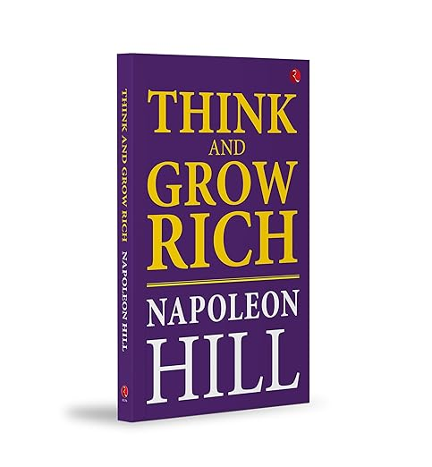
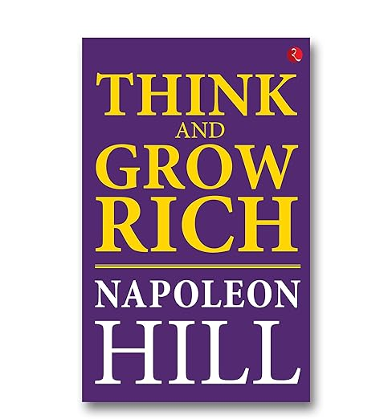
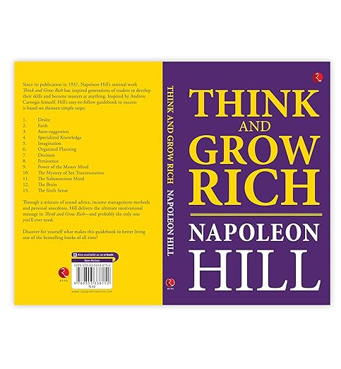

Think and Grow Rich



Think and Grow Rich is a personal development and self-help book written by Napoleon Hill. It was inspired by a suggestion from business magnate Andrew Carnegie. Published in 1937, it remains one of the best-selling books of all time.
Hill condenses stories of famous millionaires of his generation into principles of success, which are the cornerstones of his philosophy. The book focuses on how desire, faith, and persistence can propel individuals to great heights, both personally and professionally.
$19.99